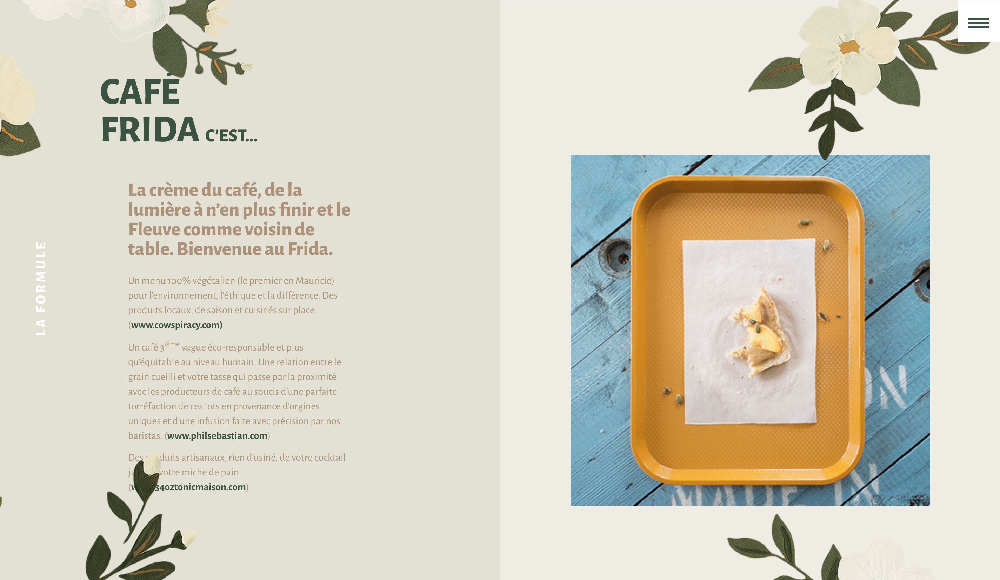
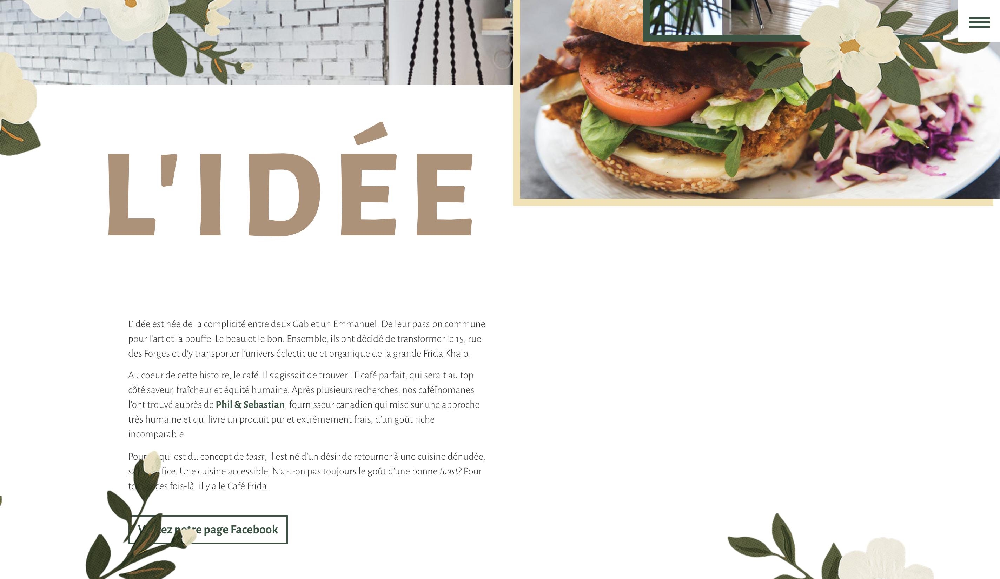
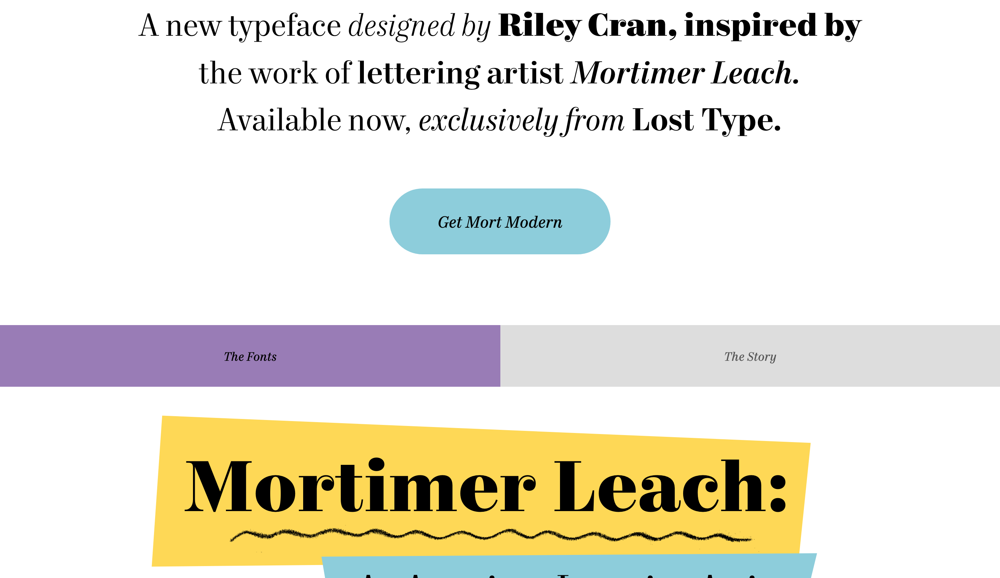
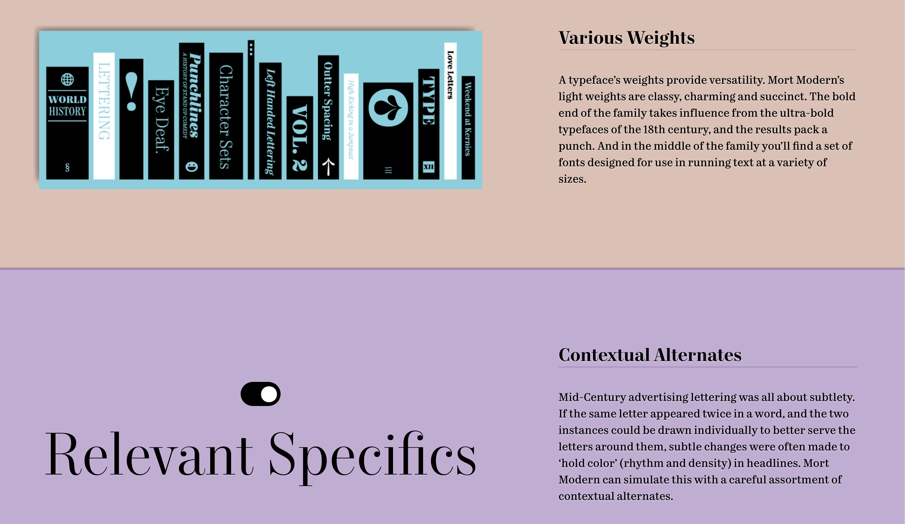
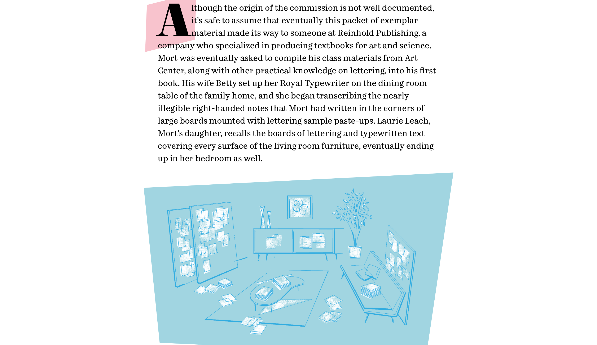
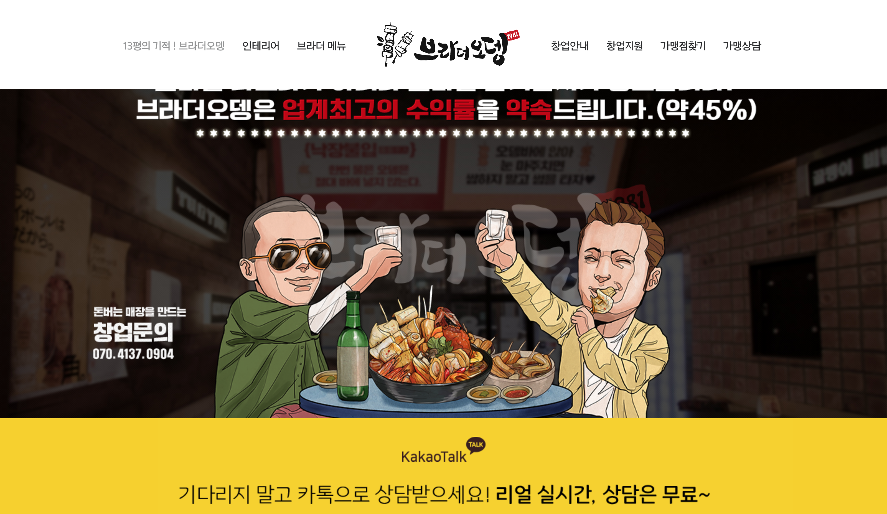
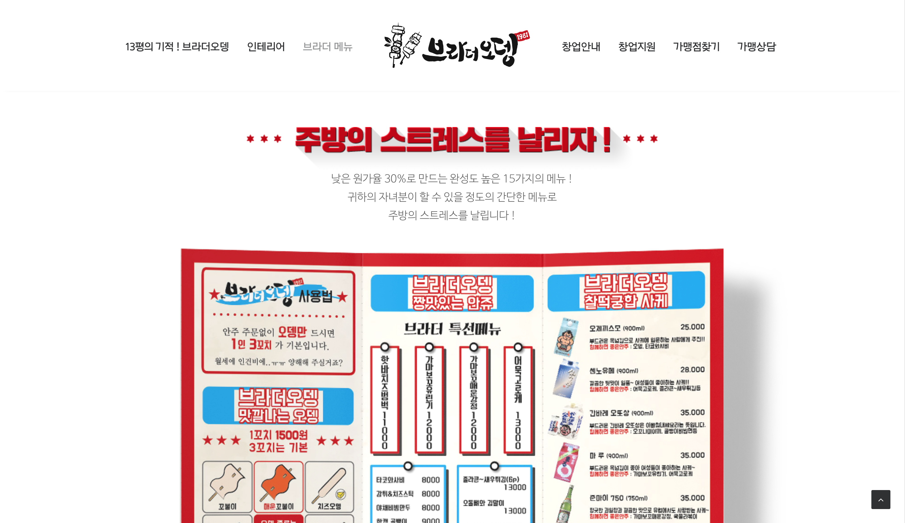
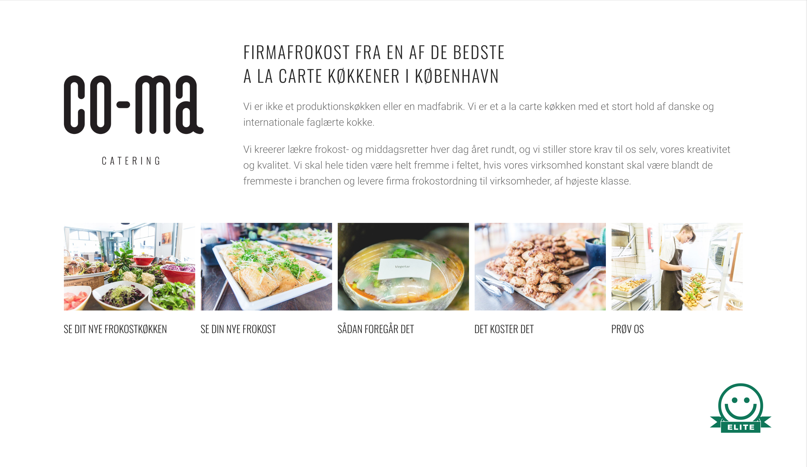
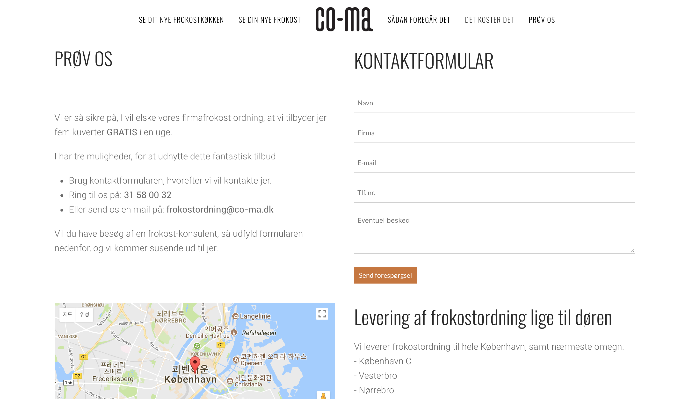

원스크롤 페이지 리서치
1. cafefrida

처음 들어가고 나서 스크롤 할때 꽃잎이 사르륵 사라지는 게 귀엽고,
4단 그리드 구성이 알차다.
2. mcwhopper


홈페이지 자체가 너무 무겁고, 약간 정신사나운감이 좀 있다.
하지만 아기자기하고, 정보전달 중점이 인상적이라서 선택했다.
3. mort-modern.losttype


보기 드물게 모든 서체가 세리프체인 게 인상적이여서 선택하였다!
4. brother-odeng

제일 원스크롤 페이지의 기본 형식을 담고 있는 사이트같다.
다른 효과들 없이 차분하고, 한 브랜드의 시작부터 현재까지 잘 스토리가 담겨있는 것 같다.
5. comacatering

깔끔해서 보기가 좋다. 추구하는 이미지에 알맞게 홈페이지가 구성된 것 같다.
만들고 싶은 사이트
좋아하는 캘리그라피에 대한 설명과,
캘리그라피 작가님들 작품들을 아카이빙한 사이트를 만들고 싶습니다!
2016286040 윤지우